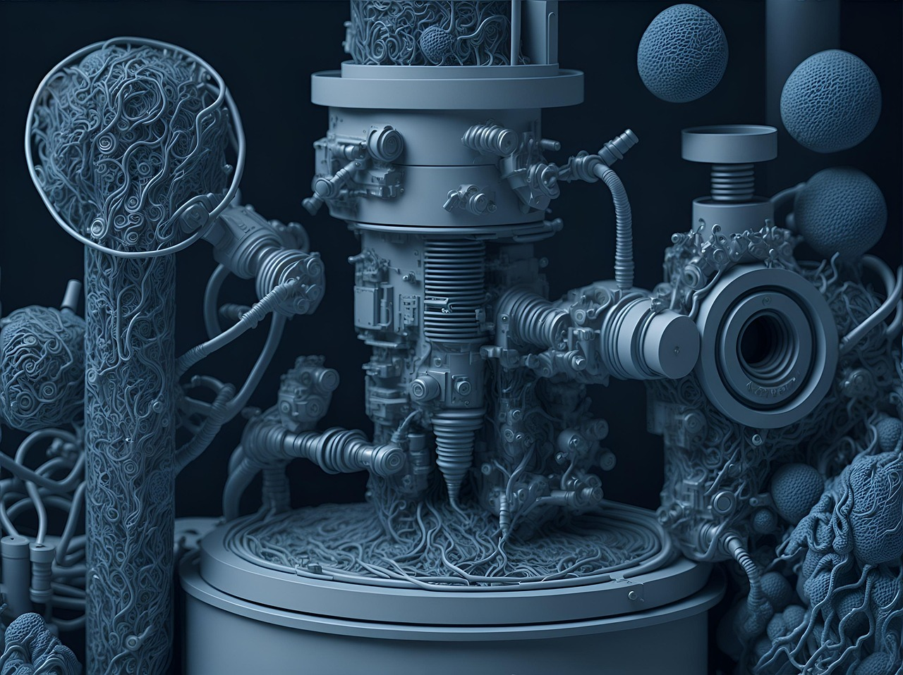

What Drain & Sewer Actually Is
Drain and sewer work focuses on the waste side of plumbing: fixture drains, main lines, laterals, cleanouts, vents (when they’re part of the cause), and sometimes storm drainage depending on the company and region. The job is about restoring proper flow and preventing repeat blockages — not just “getting it to drain today.”
People imagine “snaking drains.” Reality: it’s diagnostics + mechanical problem solving with messy consequences. You’re figuring out why it’s backing up: grease, roots, broken pipe, bellies/sags, wipes, scale, improper slope, collapsed sections, or bad transitions — then choosing the right tool and approach.

What You Spend Time Doing
Drain and sewer work is tool-forward. You’ll spend a lot of time setting up equipment, protecting the space, controlling mess, running lines, verifying results, and communicating what you found. The work cycles quickly — one problem ends, another begins.
- Clearing blockages: snakes/augers, cutters, retrieving obstructions, restoring flow safely.
- Camera inspections: locating roots, breaks, bellies, offsets, grease buildup, and collapse points.
- Hydro jetting (where used): cleaning lines, removing grease/scale, and improving long-term flow.
- Locating problems: tracing where backups originate, using cleanouts, sometimes mapping line runs.
- Explaining outcomes: “cleared” vs “fixed,” what caused it, and what prevents repeat events.
- Containment + cleanup: sanitation, PPE habits, disinfecting, protecting customer property.
Drain work has a hidden skill: knowing when “it drains now” is not the same as “the system is healthy.”
Where the Pressure Comes From
The pressure is urgency and mess. A backup is often an emergency because it stops bathrooms, floods basements, or creates sanitation issues. Customers are stressed, sometimes angry, and the environment is unpleasant.
There’s also reputation pressure: drain work can create repeat customers (great) or repeat call-backs (terrible). If you clear a line but ignore the underlying cause (roots, belly, collapse), you’ll be back — and they won’t be happy.
What Traits Actually Matter
Drain and sewer work rewards people who can handle “gross,” stay calm, and keep a process. You’re doing gritty work, but it’s not mindless work — diagnosis still matters.
- High “gross tolerance”: sewage and odor don’t derail you.
- Sanitation discipline: PPE habits, contamination control, and cleanup pride.
- Mechanical confidence: you can run tools safely and handle torque, resistance, and retrieval.
- Diagnostic honesty: you can tell the difference between “cleared today” and “needs repair.”
- Calm under urgency: you don’t panic when the situation is messy and time-sensitive.
- Customer communication: you can explain what happened without blaming or confusing people.
Drain & sewer techs win by staying methodical in ugly situations — and by telling the truth about what the camera shows.
Who Should Probably Avoid It
This lane can be high income and high demand — but it has a specific stress profile.
- You can’t handle gross environments: this is not an occasional edge case — it’s the core.
- You hate emergency vibes: backups tend to be urgent and disruptive.
- You need “clean installs” only: drain work is often messy and reactive.
- You get reckless with tools: drain machines punish sloppy safety habits.
- You dislike customer conversations: you’ll need to explain what you found and what it means.
If you like problem solving but want a broader mix of work, compare with service & repair plumbing. If you prefer bigger systems and coordination over emergencies, compare with commercial plumbing.
“Clearing” vs “Fixing”: The Core Concept
Drain and sewer work has a fork in the road: clear the obstruction (restore flow) versus fix the system (repair the reason it clogged). Great drain techs know which situation they’re in and don’t pretend they’re the same thing.
- Clear-only situations: wipes/toys, localized buildup, routine maintenance, first-time clogs with good pipe health.
- Repair-needed situations: roots in joints, bellies/sags, broken/collapsed pipe, severe offsets, recurring backups.
- Prevention mindset: educate on grease habits, root maintenance, line condition, and realistic expectations.
If you like honesty and hate repeat headaches, you’ll care about the difference between “it drains” and “it’s right.”
Next Step: Get a Signal, Then Compare
If drain and sewer work sounds appealing, decide based on whether you can tolerate the environment — and whether you like fast, tool-driven problem solving that often happens under urgency.
Run the Drain & Sewer Fit Diagnostic first. Then compare paths from the Plumbing Hub or step back to the Trades Hub. If you want the full map, start at the homepage.